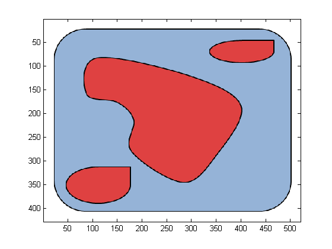

Contents
- Creation of geometries for the PDE Toolbox using the geometryObject class
- Initial setting for mesh display
- Example 1: How to create a circle
- Create square with inner region = regionA and exterior region = regionB
- Create arbitrary region out of arcs and lines
- Create polygon with left region = regionA and right region = regionB with left region being declared as the exterior region
- Combine previous regions
- Add a scaled, translated, rotated copy of the composite geometry
- Query for region (sub-domain) Ids; useful for specifying boundary conditions, formulation
- Get handle to geometry function that can be passed to adaptmesh()
- Pass mesh to assempde()
- Create geometry from parametric segments (requires Symbolic Math Toolbox)
- Create geometry from image (requires Image Processing Toolbox)
Creation of geometries for the PDE Toolbox using the geometryObject class
The geometry can be passed as a geometry function for adaptmesh() (PDE Toolbox) or as mesh data for assempde() (PDE Toolbox). The geometry can also be passed as an argument for the coeffsObject and boundaryConditionObject classes. See exampleFormulation.m on how to specify formulation. If instead you would like to directly create BC and coefficient functions, region Ids can be conveniently extracted for the purposes of specifying Boundary conditions and coefficients
function [] = exampleGeometries()
import pdetbplus.*; % import package for accessing the geometryObject and boundary classes
Initial setting for mesh display
showMesh = true; % show mesh in plots
Example 1: How to create a circle
% Define center : (1,1) as a pointObject type center = pointObject(1,1); % Define radius of 0.25 radius = 0.25; % Specify region inside circle as 'regionA' innerRegion = 'regionA'; % Specify region outside circle as 'regionB' exteriorRegion = 'regionB'; % Create Circle called 'circle1' tmp = geometryObject.createCircle('name','circle1','center',center,'radius',radius,'innerRegion',innerRegion,... 'outerRegion',exteriorRegion); % Make a copy of circle for later use g{1} = tmp; % Mesh the circle with Hmax = 2*pi*radius/20 and plot the meshed geometry figure; tmp.initMesh('showMesh',true,'Hmax',2*pi*radius/20);
Create square with inner region = regionA and exterior region = regionB
moveClockwise = true;
pt1 = pointObject(0.25,0.5);
pt2 = pointObject(0.5,0.65);
g{2} = geometryObject.createSquare('name','square2','edgeStartPoint',pt1,...
'edgeEndPoint',pt2,'innerRegion',innerRegion,'outerRegion',exteriorRegion,'clockwise',moveClockwise);
tmp = g{2};
figure;
tmp.initMesh('showMesh',showMesh);
Create arbitrary region out of arcs and lines
define the points moving clockwise
center = pointObject(0.76,-0.5);
pt1 = pointObject(0.75,0.5);
pt2 = pointObject(0.85,0.5);
la{1} = arcObject('l1','center',center,'startPoint',pt1,'endPoint',pt2);
center = pointObject(0,0);
startPoint = la{1}.endPoint();
rotationAngle = -pi/8; % negative for clockwise
la{2} = arcObject('l2','center',center,'startPoint',startPoint,'rotationAngle',rotationAngle);
% join end and starting points
la{3} = lineObject('l3',la{2}.endPoint(),la{1}.startPoint());
% set the regions. inner region is regionA, exterior region is regionB
for k=1:3
la{k}.leftRegion = 'regionB';
la{k}.rightRegion = 'regionA';
end
g{3} = geometryObject('arclineShape',la);
% need to manually specify exterior region
% this is the exterior region if this region is meshed by itself
g{3}.exteriorRegion = 'regionB';
% rotate a bit around (0,0); make sure boundaries of regions do not
% intersect!
g{3} = g{3}.rotate(pointObject(0,0),-pi/50);
tmp = g{3};
figure;
tmp.initMesh('showMesh',showMesh);
% Note: you can create your own boundary type by implementing the
% boundaryConditionObject interface
Create polygon with left region = regionA and right region = regionB with left region being declared as the exterior region
pts{1} = pointObject(0,0);
pts{2} = pts{1} + [0,1];
pts{3} = pts{2} + [1,1];
pts{4} = pts{3} + [1,-1];
pts{5} = pts{4} - [0,1];
leftRegion = 'regionA';
rightRegion = 'regionB';
isClockwise = true;
g{4} = geometryObject.createPolygon('name','poly3','points',pts,'leftRegion',leftRegion,'rightRegion',rightRegion,...
'clockwise',isClockwise);
tmp = g{4};
figure;
tmp.initMesh('showMesh',showMesh);
Combine previous regions
Note: g{1}..g{4} should not have intersecting boundaries or the same boundary present in more than one region (geometryObject)
g{5} = g{1} + g{2} + g{3} + g{4};
% set exterior region to be the same as that for the polygon i.e. regionA
% Before calling initMesh(), a single exteriorRegion must have been defined
g{5}.exteriorRegion = g{4}.exteriorRegion;
tmp = g{5};
figure;
tmp.initMesh('showMesh',showMesh);
% By careful specification of regions we can mesh where we like
Add a scaled, translated, rotated copy of the composite geometry
g{6} = g{5}.scale(0.5).translate(pointObject(2.5,0)).rotate(pointObject(2.6,0),...
pi/4);
g{7} = g{5} + g{6};
g{7}.exteriorRegion = g{6}.exteriorRegion();
figure;
tmp = g{7}.initMesh('showMesh',showMesh);
Query for region (sub-domain) Ids; useful for specifying boundary conditions, formulation
display 'regionB id' tmp.getRegionToId('regionB') display 'region A id' tmp.getRegionToId('regionA')
regionB id
ans =
1
region A id
ans =
0
Get handle to geometry function that can be passed to adaptmesh()
display 'handle to geometry function' geometryFunction = @tmp.geometryFunction % e.g. adaptmesh(geometryFunction,...)
handle to geometry function
geometryFunction =
@(varargin)tmp.geometryFunction(varargin{:})
Pass mesh to assempde()
e.g. assempde(...,tmp.mesh.p,tmp.mesh.e,tmp.mesh.t,...)
Create geometry from parametric segments (requires Symbolic Math Toolbox)
define parametric segments for the geometry and create PDE geometry
syms r; xSym = 2*cos(r); ySym = 3*sin(r); % segment 1 with parametric curve(2*cos(r),3*sin(r)) le{1} = parametricLineObject('pl4',xSym,ySym,0,pi); le{1}.leftRegion = 'regionA'; le{1}.rightRegion = 'regionB'; ySym = ySym + sin(7*r); % segment 2 with modified expression for y % We need to make sure that the second segment starts where the first segment ends le{2} = parametricLineObject('pl5',xSym,ySym,pi,3/2*pi); le{2}.leftRegion = 'regionA'; le{2}.rightRegion = 'regionB'; % segment 3 - straight line connects the start and end points of the % previous segments le{3} = lineObject('pl6',le{2}.endPoint(),le{1}.startPoint()); le{3}.leftRegion = 'regionA'; le{3}.rightRegion = 'regionB'; g{8} = geometryObject('paramBased',le); g{8}.exteriorRegion = 'regionB'; tmp = g{8}; figure; tmp.initMesh('showMesh',showMesh);
Create geometry from image (requires Image Processing Toolbox)
read image, identify relevant boundaries and create PDE geometry
im = imread('testImage.png'); figure; image(im); % create geometries from recognized boundaries of image [imgs,isClockwise] = geometryObject.createGeometriesFromImage('image','testImage.png','minimumPoints',15); % 1. not all geometries created this way are interesting or what we expect. % We need manually verify by plotting the geometries individually. % Here we combine the ones with indices 3,4,..end that apriori have % been determined to be the ones we are interested in (by calling % the plot() method per geometry) % 2. Set interior and exterior regions % for geometry 3, we want regionC to be exterior and regionB to be interior tmp = imgs{3}.setInteriorExteriorRegions('regionB','regionC',isClockwise); for k=4:length(imgs) imgs{k} = imgs{k}.setInteriorExteriorRegions('regionA','regionB',isClockwise); tmp = tmp + imgs{k}; end % set exterior region for combined geometry tmp.exteriorRegion = 'regionC'; % get limits of geometry to transform the coordinates [xmin,ymin,xmax,ymax] = tmp.getLimitsXY(); % get rid of XY offsets and scale model to be of size ~ 1 tmp = tmp.translate(pointObject(0-xmin,0-ymin)).scale(1/max(abs(xmax-xmin),abs(ymax-ymin))); figure; tmp.initMesh('showMesh',showMesh);
end